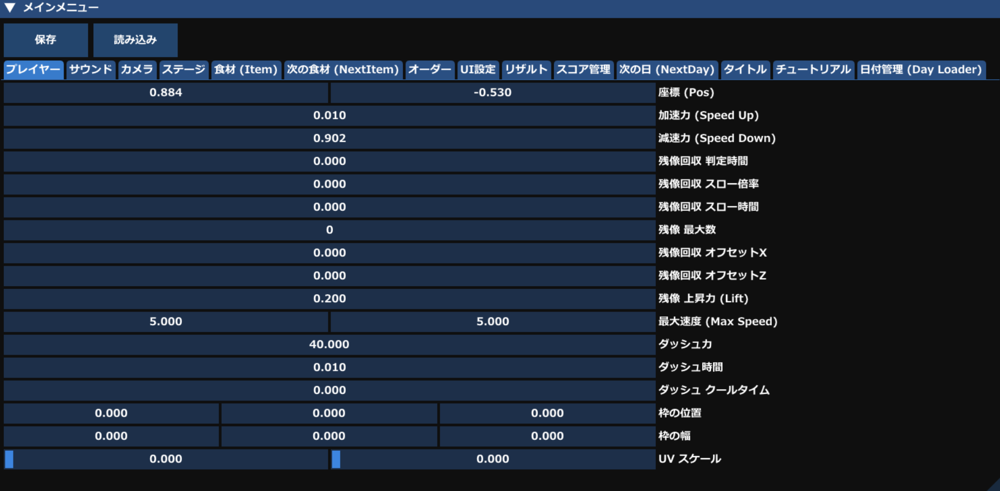
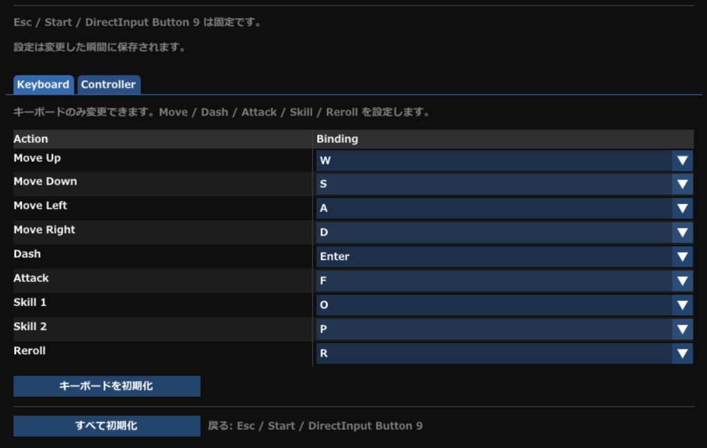
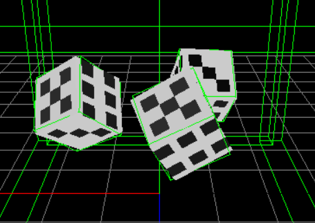
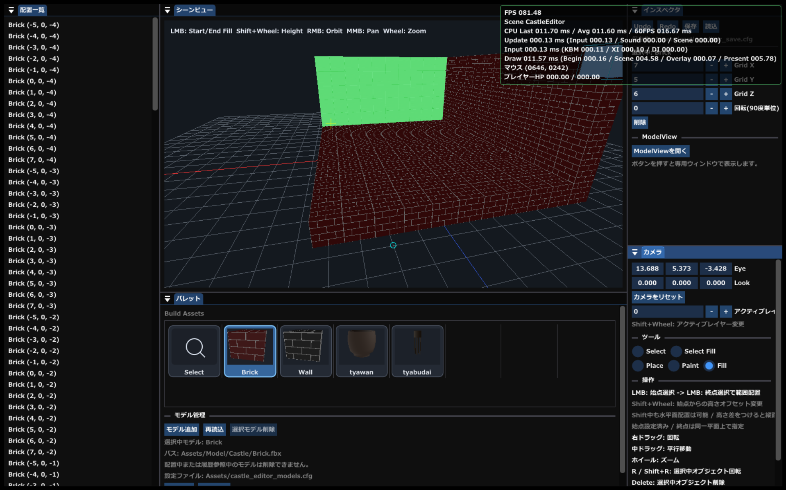
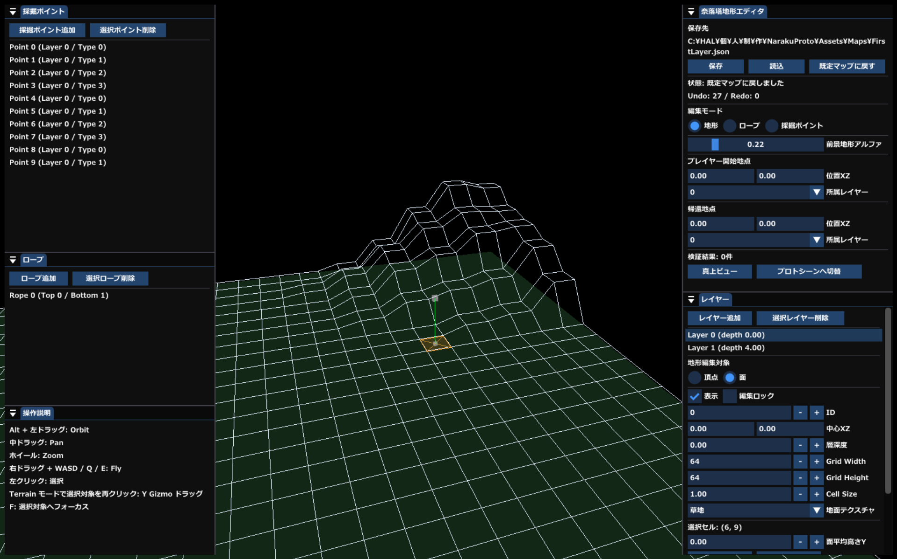

スキル
- C
- C++
- C#
- Markdown
- Python
- JavaScript
- HTML
- Unity
- Unreal Engine
- Visual Studio
- Visual Studio Code
- GitHub
- Maya
目次（制作作品一覧）
Buns&Party

担当内容
- プロトタイプ作成（プレイヤー移動、食材キャッチ、納品）
- 内部システム実装（音出力用関数、受け渡し用変数）
- パラメーター調整用 GUI（ImGui）実装、Docking でデバッグ性を改善
- パラメーター調整データの読み書き機能（JSON 管理）
- プランナー向け GUI 調整、仕様書作成
ネームバトラー
No Image
概要
HEW 直前課題として、完全ターン制バトルゲームを制作。
担当内容
- 名前入力システム（十字キー/WASD、上下で文字変更、左右で文字移動）
- 構造体による各パラメーター管理
- 数値変動処理、戦闘処理の簡略化
- 行動値（スピード）の管理
仕事猫：無限残業編

目的
2.5D・アクション・ローグライク要素を組み合わせたゲーム制作。
担当内容
- 音量調整、キーコンフィグ、FullScreen / Window 切り替え
- 段階ごとの強化率を表で可視化
- DrawList による簡易 UI 作成
- エフェクト作成ツール実装とゲーム内反映（Unity ParticleSystem を参考）
チンチロローグライク

目的
ボードゲームで体験した面白さを、物理挙動として再現すること。
担当内容
- 物理演算・挙動の強化（Unity 並み、またはそれ以上を目標）
- 要件に合わせて RigidBody を作成
- 質量を考慮した挙動を実装
- 関数の汎用化・コンポーネント化で再利用性を向上
課題
- メッシュコライダー利用のため処理負荷が高い
- 最適化の継続が必要
タワーディフェンス

目的
エディタ画面を作ることを主目的に制作。
担当内容
- 3D グリッド上で Box を設置
- 保存/読み込み機能
- モデル変更・読み込み・削除（エディタ内）
探索型サバイバルローグライト（誠意制作中）

目的
これまでより大規模なゲーム制作に挑戦し、開発中に必要となるツールを実装。実制作を通じて、現場で求められるツール要件を再確認する。
実装済み
- プレイヤー操作（移動、ダッシュ、回避、採掘、ロープ昇降、所持品確認、全体マップ確認、攻撃、体力/スタミナ/精神力の増減）
- 敵挙動（接近、攻撃）
- UI（ピン設置、マップ表示）
- アイテム（採掘取得、討伐報酬）
- 地形生成エディタ
今後の実装予定（プロトタイプ）
- プレイヤー: 回避距離調整、スタミナ消費見直し
- 敵: 巡回 AI、縄張り侵入への反応、報酬アイテム追加
- UI: ピン種類追加、リセット挙動の設定化
- アイテム: 売却専用以外のインゲーム利用拡張
開発中に制作した/する予定のツール
- 地形生成エディタ
- UI アニメーションエディター
FileZipper
No Image
概要
WPF/.NET を使用した簡易 Zip 化ツール。
制作経緯
課題提出時に必要ファイルを毎回手動で集める手間を削減するため。
挙動
- 指定フォルダから必要なファイルのみをピックアップ
- 選択したファイルを Zip 化
- Zip 化前にファイル名を変更可能